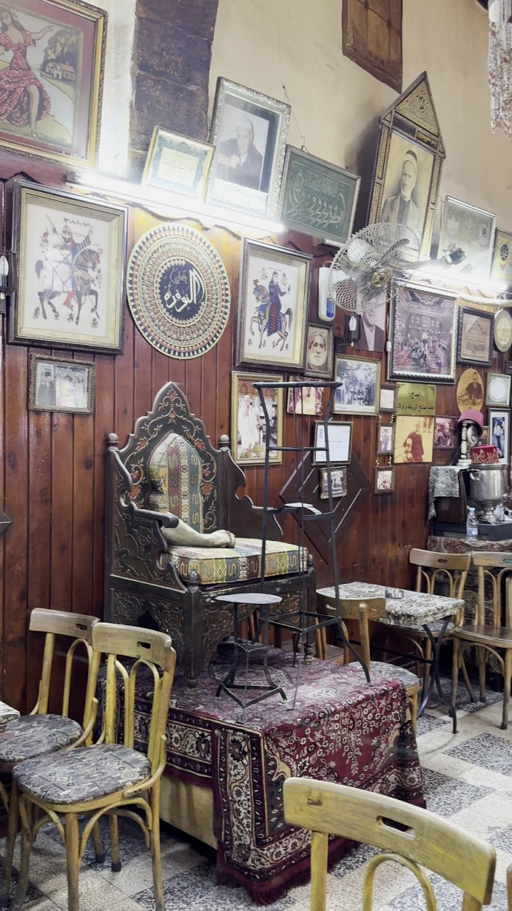
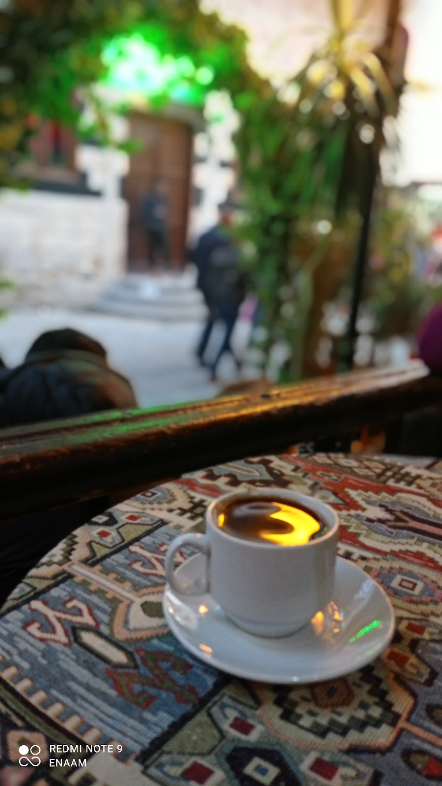
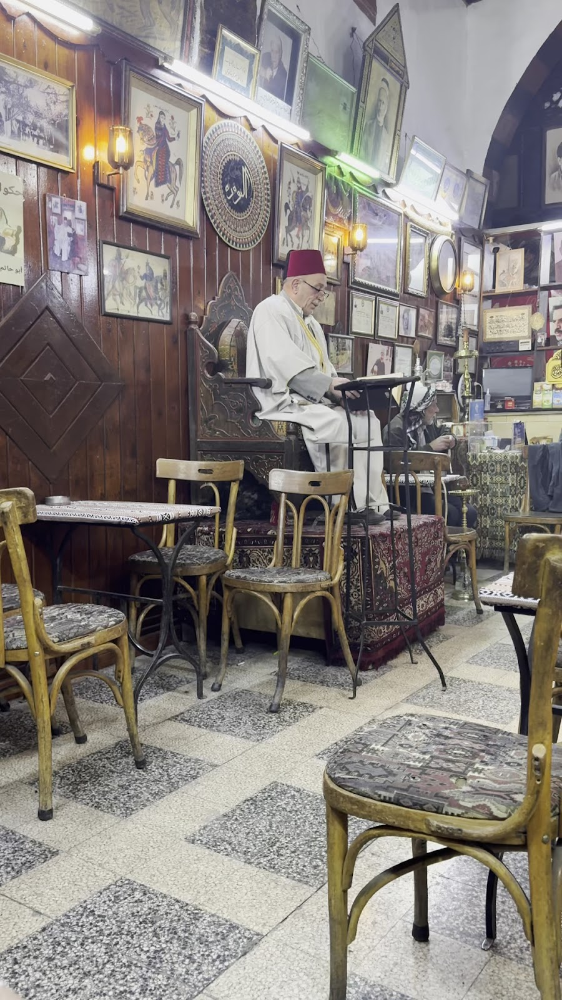
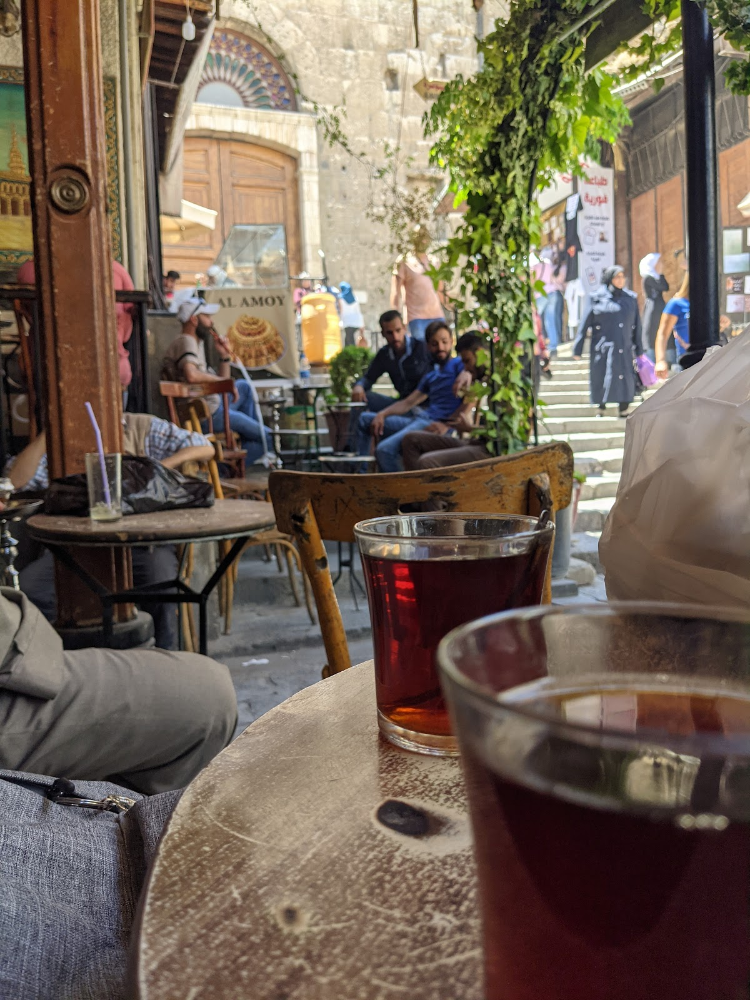
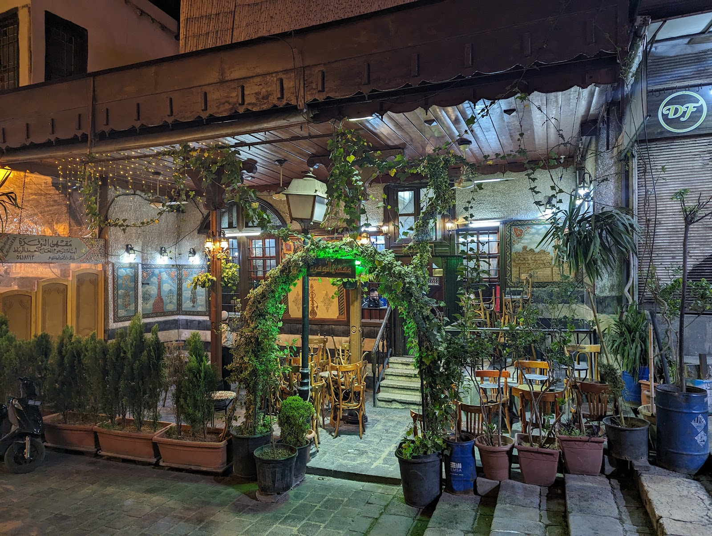
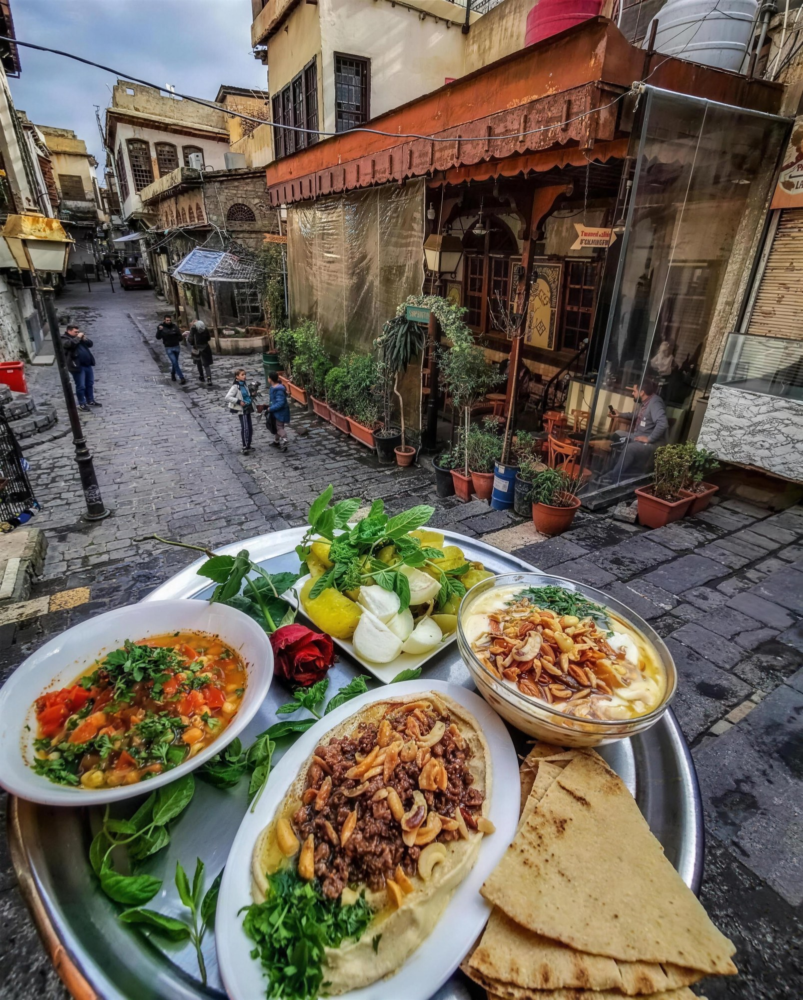

على الدرج النازل من الباب الشرقي للجامع الأموي، مقهى يحكي — قهوة وزهورات وأركيلة، وكرسي الحكواتي بانتظار الحكاية.On the steps below the eastern gate of the Umayyad Mosque, a café that tells stories — coffee, zhourat and shisha, with the hakawati's chair waiting for tonight's tale.
منذ قرون والنوفرة قاعدة بمكانها، لاصقة بالجدار الشرقي للجامع الأموي. تغيّرت المدينة حواليها ألف مرة، وبقي المقهى مثل ما هو: كراسي خشب على الزقاق، صواني قهوة تروح وتجي، وجدران معلّق عليها صور من عمر البلد كله.For centuries Al-Nawfara has sat in the same spot, pressed against the eastern wall of the Umayyad Mosque. The city around it changed a thousand times; the café stayed as it was — wooden chairs in the alley, coffee trays coming and going, walls hung with photographs as old as the country itself.
وهنا بيت الحكواتي: الكرسي المرتفع بصدر الصالة اللي قعد عليه آخر حكواتية دمشق يقصّون سيرة عنترة والظاهر بيبرس على روّاد المقهى. الشوام قبل الزوّار، والزوّار من كل الدنيا — كل واحد إجا يسمع الشام تحكي.And this is the house of the hakawati: the raised chair at the head of the hall where the last storytellers of Damascus recited the epics of Antara and Baybars to the café's crowd. Damascenes first, travellers after — from everywhere, all coming to hear Damascus speak.


فنجان قهوة مرّة على قماش الكليم — الطلب الأول بالنوفرة من مئات السنين.Bitter Arabic coffee on kilim cloth — the first order at Al-Nawfara for hundreds of years.

بين الحكاية والنغم، الصالة عامرة دايماً — جلسة شامية ما بتشبه غيرها.Between story and song the hall is always full — a Damascene sitting like no other.

اقعدوا برّا على حجر القيمرية وتفرّجوا على الرايح والجاي — أحلى مقعد لمراقبة الناس بالشام.Sit outside on Al-Qaymariyya's stone and watch the world pass — the best people-watching seat in Damascus.


"Al-Nawfara Café is Damascus in its most human, most alive form. Tucked beside the Umayyad Mosque, this historic café has been welcoming Damascenes and travelers for generations, offering more than coffee."
"A very interesting cafe and must-visit place — not only is it in the heart of the old city almost attached to the Umayyad Mosque, but it is also bustling with action and people."
"If you are visiting the old city, this is the absolute place to be. The perfect spot if you love people-watching and want to observe folks from all different backgrounds walking by."
★ 4.4 / 5 — 349 تقييم على غوغلGoogle reviews
| يومياًDaily | 8:00 — 22:00 |
مفتوح كل أيام الأسبوع — من قهوة الصبح لأركيلة السهرة.Open every day — from morning coffee to the evening shisha.
القيمرية — على الدرج شرقي الجامع الأموي، دمشق القديمة
+963 11 541 8213
اتصلوا فيناCall us افتحوا الخريطةOpen in Maps فيسبوكFacebook